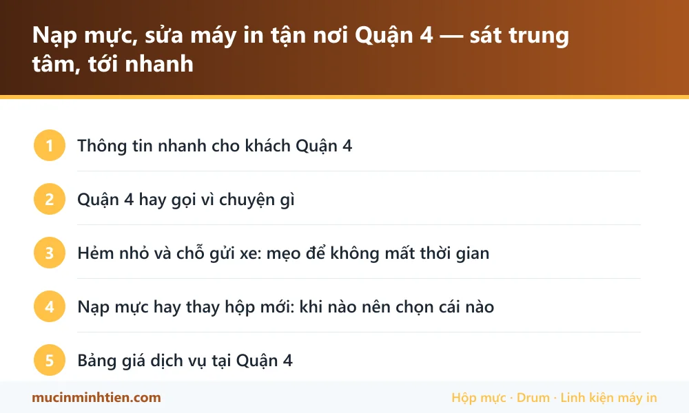

Nạp mực, sửa máy in tận nơi Quận 4 — sát trung tâm, tới nhanh
Minh Tiến nhận nạp mực và sửa máy in tận nơi toàn Quận 4 — Khánh Hội, Vĩnh Hội, Xóm Chiếu và khu cảng cũ. Quận 4 sát trung tâm nên thường 30–45 phút là có mặt. Kỹ thuật viên đi xe máy nên vào được hẻm nhỏ, nạp mực từ 80.000đ, kiểm tra xong mới báo giá.
Thông tin nhanh cho khách Quận 4
| Hạng mục | Chi tiết |
|---|---|
| Thời gian có mặt | 30–45 phút — Quận 4 nằm sát trung tâm, qua cầu Khánh Hội hoặc cầu Ông Lãnh là tới |
| Khu vực nhận | Khánh Hội, Vĩnh Hội, Xóm Chiếu, khu Bến Vân Đồn, Hoàng Diệu, Nguyễn Tất Thành, Tôn Đản |
| Hẻm nhỏ | Kỹ thuật viên đi xe máy nên vào được hẻm xe hơi không vào được — phần lớn nhà phố Quận 4 thuộc diện này |
| Làm được tại chỗ | Nạp mực, thay drum – gạt – trục từ, vệ sinh máy, gỡ kẹt giấy, cài driver |
| Khách hay gọi | Văn phòng công ty giao nhận, đại lý vé, tiệm photo nhỏ, hộ kinh doanh, nhà riêng |
| Hoá đơn | Có xuất VAT — báo trước khi đặt lịch |
Quận 4 hay gọi vì chuyện gì
Quận 4 là quận nhỏ, đông dân, nhiều nhà phố mặt tiền hẹp và rất nhiều hộ kinh doanh. Máy in ở đây phần lớn là máy để bàn một chức năng hoặc máy đa năng cỡ nhỏ, dùng hằng ngày nhưng ít được vệ sinh.
- Công ty giao nhận, đại lý vận tải quanh Nguyễn Tất Thành và khu cảng cũ: in vận đơn, phiếu giao hàng liên tục. Máy chạy nhiều nên hay kẹt giấy và mòn quả đào.
- Văn phòng nhỏ, phòng công chứng, đại lý bảo hiểm ở Bến Vân Đồn, Hoàng Diệu: máy laser đen trắng, gọi vì bản in mờ hoặc hết mực.
- Tiệm photo, tiệm in nhỏ trong hẻm: máy chạy khối lượng lớn hơn nhiều so với máy văn phòng, tới lúc gọi thì thường phải thay cả drum lẫn gạt.
- Nhà riêng, học sinh sinh viên: máy phun Epson, Canon để lâu không dùng nên tắc đầu phun.
Máy để lâu không in là bệnh riêng của nhóm khách nhà riêng — với máy phun, mỗi lần bỏ không vài tuần là mực khô trong đầu phun. Nếu gặp trường hợp đó, đọc trước bài vệ sinh đầu phun, nhiều ca tự làm được.
Hẻm nhỏ và chỗ gửi xe: mẹo để không mất thời gian
Nhiều địa chỉ ở Quận 4 nằm trong hẻm ngoặt nhiều lần và số nhà xuyệt dài. Hai việc giúp kỹ thuật viên tới đúng chỗ ngay lần đầu:
- Nhắn Zalo vị trí trên bản đồ thay vì đọc số nhà — nhanh và chính xác hơn hẳn.
- Nói trước hẻm có cho gửi xe không, hoặc gửi ở đâu gần nhất.
Với chung cư cũ không có thang máy, báo giúp tầng — nếu phải khiêng máy xuống thì kỹ thuật viên đi hai người.
Nạp mực hay thay hộp mới: khi nào nên chọn cái nào
Câu hỏi gặp nhiều nhất ở nhóm khách hộ kinh doanh. Nguyên tắc bên mình vẫn tư vấn thẳng:
- Hộp còn vỏ tốt, mới nạp dưới 3–4 lần: nạp lại là kinh tế nhất, in ra vẫn đẹp.
- Hộp đã nạp nhiều lần, bản in bắt đầu có sọc hoặc lem: thay trống và gạt rồi nạp tiếp, rẻ hơn mua hộp mới.
- Vỏ hộp đã nứt, bánh răng mòn, in ra nền xám: lúc này nạp thêm chỉ tốn tiền, nên thay hộp.
Chi tiết cách phân biệt nằm ở bài phân biệt mực chính hãng và mực trôi nổi và cách chọn mực in đúng máy.
Đổ mực, nạp mực hay thay mực: chọn cách nào cho tiệm và nhà riêng
Ở Quận 4 hai nhóm khách dùng hai từ khác nhau cho cùng một việc: tiệm photo và hộ kinh doanh quen gọi đổ mực, nhà riêng và văn phòng nhỏ gọi nạp mực hoặc thay mực. Đều là nạp lại bột mực vào hộp cũ, không phải mua hộp mới.
Khi nào nên nạp lại, khi nào nên mua hộp mới — nói thẳng để khách khỏi tốn tiền oan:
- Nạp lại khi vỏ hộp còn tốt, bản in vẫn đều. Rẻ nhất, 80.000–150.000đ.
- Nạp kèm thay trống hoặc gạt khi bản in bắt đầu có sọc hoặc nền xám. Vẫn rẻ hơn hộp mới.
- Mua hộp mới khi vỏ nứt, bánh răng mòn, nạp vào vẫn in xấu.
Khách muốn nạp mực giá rẻ thì bên mình vẫn làm, nhưng nói rõ: mực rẻ hơn thường cho số trang ít hơn và dễ rơi bột. Chênh lệch chỉ vài chục nghìn nên phần lớn khách chọn loại tốt sau khi nghe giải thích.
Bảng giá dịch vụ tại Quận 4
| Hạng mục | Áp dụng cho | Giá tham khảo |
|---|---|---|
| Nạp mực hộp mực laser | HP, Canon, Brother phổ thông | 80.000 – 150.000 đ |
| Bơm mực máy in phun | Epson, Canon dòng phun | từ 60.000 đ/màu |
| Vệ sinh đầu phun máy in phun | Máy để lâu không dùng, in mất nét | Kiểm tra rồi báo giá |
| Thay trống (drum) | Máy in laser | từ 120.000 đ |
| Vệ sinh máy in tận nơi | Tất cả các dòng | từ 100.000 đ |
| Thay quả đào, bố thắng | Máy kẹt giấy, kéo nhiều tờ | Kiểm tra rồi báo giá |
Giá vật tư lấy đúng theo kho — xem bảng giá 773 mã. Kỹ thuật viên kiểm tra và báo giá trước khi làm; khách đồng ý mới thay.
Vật tư mang sẵn theo xe khi tới Quận 4
Quận 4 nhiều máy để bàn phổ thông nên xe mang sẵn nhóm vật tư dùng chung cho các dòng này:
| Vật tư mang theo | Dùng cho | Ghi chú |
|---|---|---|
| Hộp mực 12A, 85A, 35A | Canon 2900, HP 1102, HP 1005 — ba dòng gặp nhiều nhất | Xem giá ở <a href="../../muc-in/hop-muc-12a/">trang 12A</a> và <a href="../../muc-in/hop-muc-85a/">trang 85A</a> |
| Mực Epson 003 | Epson L3110, L3210, L1210 ở nhà riêng và tiệm nhỏ | <a href="../../muc-in/muc-epson-003/">Xem trang mực 003</a> |
| Drum và gạt mực rời | Bản in sọc, lem sau nhiều lần nạp | Thay lẻ rẻ hơn thay cả hộp |
| Quả đào, bố thắng | Máy in vận đơn chạy nhiều | Hàng hao nhanh nhất ở nhóm giao nhận |
Lỗi hay gặp ở Quận 4 và bài hướng dẫn tự xử lý
Nhiều ca chỉ cần làm theo bài là xong, không phải gọi thợ. Đọc trước cho đỡ tốn tiền:
- Máy in không kéo giấy — bệnh số một của máy in vận đơn chạy liên tục
- Vệ sinh đầu phun Epson — máy phun để lâu không dùng ở nhà riêng
- Máy in ra giấy trắng — kiểm tra theo bảng trước khi gọi thợ
- Cách chọn mực in đúng máy, tiết kiệm — nạp lại hay mua mới thì rẻ hơn
- Máy in không in được, báo Offline — phần lớn tự xử lý được trong 5 phút

trueCâu hỏi thường gặp — khách Quận 4
Nhà trong hẻm nhỏ Quận 4 có nhận không?
Nạp mực tại nhà mất bao lâu?
Máy in nhà để mấy tháng không dùng, giờ in ra mất nét, có cứu được không?
Hộ kinh doanh nhỏ có được nợ hay thanh toán chuyển khoản không?
Tiệm photo cần gấp trong ngày có kịp không?
Có bán luôn hộp mực để tự thay không?
Đổ mực máy in quận 4 bao nhiêu tiền một lần?
Nạp mực giá rẻ có làm hỏng máy không?
Khu vực phục vụ khác
- Sửa máy in, nạp mực tận nơi Quận 7 — có mặt trong 45–60 phút
- Sửa máy in, nạp mực tận nơi Bình Chánh — Trung Sơn, Bình Hưng, Vĩnh Lộc
- Sửa máy in, nạp mực tận nơi Quận 8 — có mặt 30–45 phút, báo giá trước
- Sửa máy in, nạp mực tại phường Chánh Hưng — tới trong 30 phút
- Sửa máy in, nạp mực tận nơi Nhà Bè — nhận cả khu công nghiệp Hiệp Phước